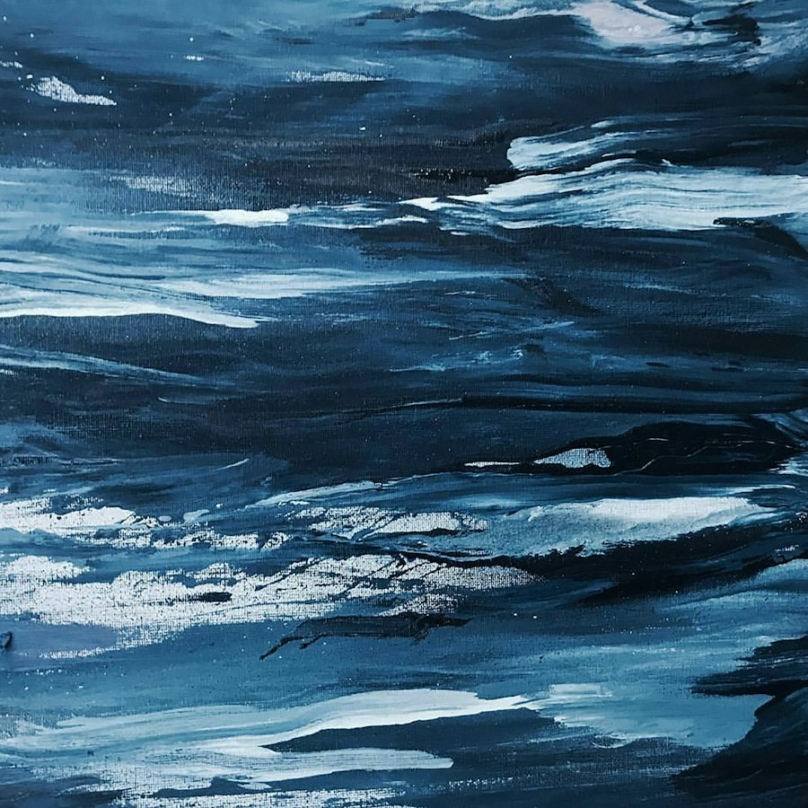
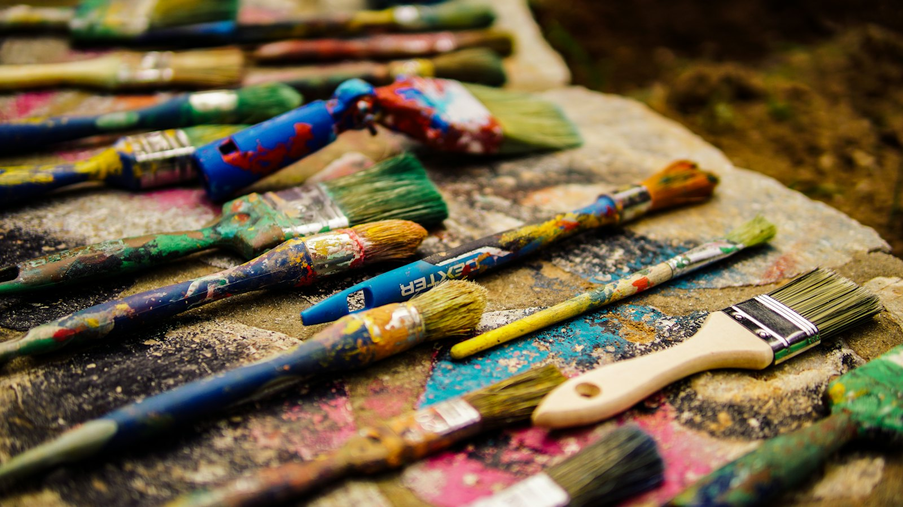

01 / 04
Slack Water
Painted from a sketch made at 7:42 pm, the minute the tide stopped going out. The white lines are the last waves before the water goes still.
Available
Ask about this painting →Series · 2025
Four paintings made over one summer at the estuary, each started at the exact minute the tide turned.

Twice a day, for about twenty minutes, the estuary stops moving. The water going out meets the water coming in, and for a moment nothing goes anywhere. Fishermen call it slack water. I spent the summer of 2025 trying to paint it.
Every evening I checked the tide table, cycled down to the mudflats, and made a ten-minute sketch in ink at the turn. Most were useless. Four of them became these paintings, worked up in the studio over the following months with poured acrylic, scraped back and poured again.
The rule for the series was simple: nothing in the painting that I couldn't see at that minute. Which is why there's only one heron.
01 / 04
Painted from a sketch made at 7:42 pm, the minute the tide stopped going out. The white lines are the last waves before the water goes still.
Available
Ask about this painting →02 / 04
Red ink dropped into wet teal, the way river water clouds the sea when the tide comes back in. This one sold on the first night of the show.
Sold · prints available
Ask about a print →03 / 04
The only painting in the series with a living thing in it. The orange marks are where the heron stood before it flew.
Available
Ask about this painting →04 / 04
Where fresh water meets salt. Two pours of paint, left to run into each other without mixing.
Available
Ask about this painting →